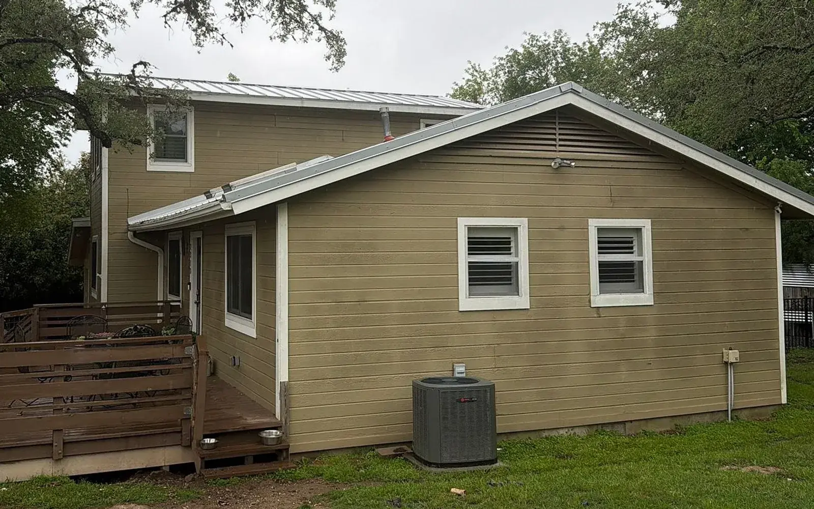
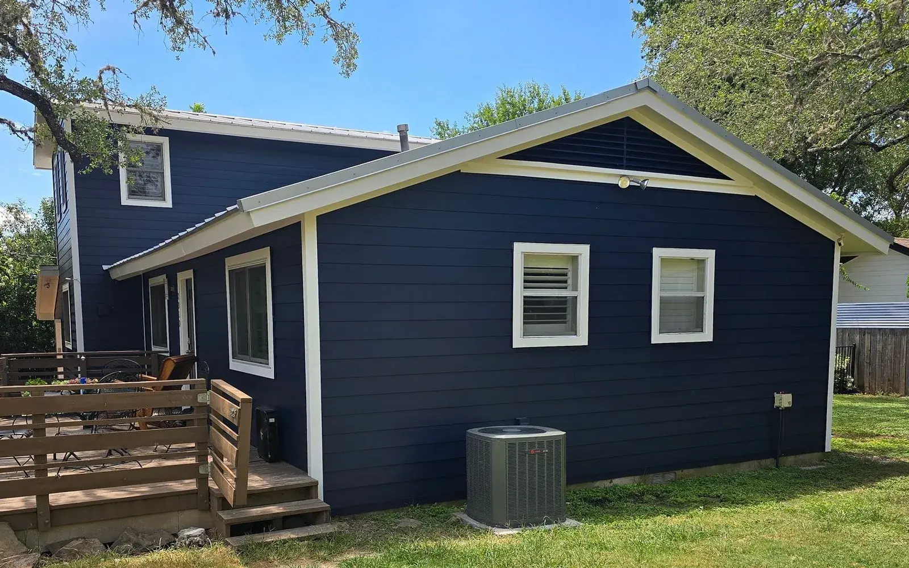

Siding and windows, priced in public.
Real prices from 886 documented Austin jobs. Yours comes free at the inspection.


Before After- On this wall
- Rob Roy, Austin, July 2026
- Installed
- James Hardie Select Cedar Mill Lap 8.25"
documented projects since 2018, each with dates, products and a price band
priced siding jobs, 2022–2026. The median landed at $10k–$15k
of those 415 used the same board: HardiePlank lap, 8.25 inches wide
before-and-after pairs, shot before the crew started and after it finished
- 312mapped, with photos
- 574counted, not on the map
- 886documented projects
The firm's own figures reconcile to the job. The 312 are drawn on the map further down; every one is a photographed project.
Eleven trades. What each one actually cost.
The middle half of every trade's priced jobs, and the band that holds the median, read off each job's worksheet. Materials and labour, before discounts.
Bars run from $0 to $50k, gridlines every $10k. The dark block is the band holding the median job.
*Per month: the median band financed in full with no down payment, 120 payments at 7.99% APR, on approved credit. Bands come from 1,590 individually priced trades on 886 documented projects, 2018–2026: a documented sample, not every job since 2009. Storm and hail damage starts with a free inspection. See every band in detail

 BeforeAfter
Siding portion$25k–$30k
BeforeAfter
Siding portion$25k–$30k
Drag the handle or tap the photo to compare.Drag the handle to compare, or rest the pointer on the photo: the square shows the other half of the job through it.
Same house. Price on it.
Each pair is one of the firm's own jobs, with that job's own price band printed on it. 177 pairs are published; these six lead the homepage.
- Where
- Village At Western Oaks, Austin
- Finished
- Aug 2026
- Installed
- James Hardie 8.25" Smooth Siding
- Siding portion
- $25k–$30k
Bands are the job's own worksheet amount for that trade, before discounts. Photos come from the job file, cropped to the same frame.
Repaint a real house before you pick a colour.
This is the Rob Roy job from the top of the page. Choose a Sherwin-Williams colour the firm publishes and the new boards take it, shadow lines and all.


- Siding
- Hunt Club SW 6468
- Trim
- Pure White SW 7005
- This job
- Siding portion $15k–$20k
A colour preview on the job's own photo; real paint reads differently in Texas sun. The price band is that job's own, not a quote.
One job, start to finish.
Job APS-4867, Village at Western Oaks, Austin, as the firm's own file records it. Every job runs the same four steps: free inspection, written proposal, install, final check.
Siding portion$25k–$30k
Exterior painting on the same job: $5k–$10k. Open job file APS-4867 (opens austinprosiding.com in a new tab)
- Mar 9, 2026
A referral, and an inspection the same day
A past customer sent the homeowner. The inspection and estimate started that day and covered siding plus fascia, soffit, garage jambs and brick-pocket details.
- Jun 18, 2026101 days later
Approved
The plan: James Hardie 8.25-inch smooth fiber cement, finished in Sherwin-Williams SuperPaint.
- Aug 31, 202674 days later
Crew on site
Wall sections, fascia, soffit, brick pockets and garage jambs, then paint on the siding, fascia, soffit, garage doors and porch ceiling.
- Sep 3, 2026Day 4 on site
Done
Punch-out items and two yard clean-ups, then the final walkthrough.
312 dots. Each one is a documented job.
Each dot is a documented project with photos, placed near the home, never on it. Scrub the dates to watch the file fill up.
312 photographed projects are drawn here. 574 more documented projects are counted but sit outside this frame, have no recorded location or have no photos published yet. 312 + 574 = 886. Data: the project finder file published on austinprosiding.com.
Reviews and credentials
The names homeowners write down
- Kevinnamed in 9 of the 30 reviews on the firm's reviews page
“Kevin was wonderful in helping me make some decisions about the project.”
Lala Matthews, Google review, 2026 - Garrettnamed in 8 of the 30 reviews on the firm's reviews page
“Also special shout out to Garrett who finished up and also swept the pollen off my deck! I did not expect that extra touch.”
Katie Littleton, Google review, 2026 - Tracynamed in 4 of the 30 reviews on the firm's reviews page
“Tracy provided us with a great, no pressure estimate along with a comprehensive package of info that detailed the entire process.”
David McPherson, Google review, 2026 - Paul Halenamed in 3 of the 30 reviews on the firm's reviews page
“Paul Hale came out and explained the process, the windows and the costs.”
LOIS RICHWINE, Google review, 2026
Counts are from the 30 review excerpts published on austinprosiding.com/reviews. Paul Hale and Paul Schantz are counted separately. Read all 474 on Google (opens austinprosiding.com in a new tab)
What each badge takes
 James Hardie Elite PreferredThe top tier of James Hardie's contractor alliance. James Hardie audits it, and it has to be re-earned. 431 documented Hardie projects.
James Hardie Elite PreferredThe top tier of James Hardie's contractor alliance. James Hardie audits it, and it has to be re-earned. 431 documented Hardie projects. GAF Master EliteGAF's top designation for roofing contractors; GAF says fewer than 2% of contractors nationwide hold it. 200 documented GAF roofs.
GAF Master EliteGAF's top designation for roofing contractors; GAF says fewer than 2% of contractors nationwide hold it. 200 documented GAF roofs. James Hardie President's Club, 2025James Hardie honoured Austin Pro with its President's Club Award for 2025.
James Hardie President's Club, 2025James Hardie honoured Austin Pro with its President's Club Award for 2025. Andersen Certified Contractor, PremierCertified at the Premier level for Andersen windows and doors.
Andersen Certified Contractor, PremierCertified at the Premier level for Andersen windows and doors. GuildQuality GuildmasterGuildQuality surveys customers after their projects; the award recognises service excellence in those surveys.
GuildQuality GuildmasterGuildQuality surveys customers after their projects; the award recognises service excellence in those surveys. BBB Accredited, A+An accredited business with the Better Business Bureau, rated A+.
BBB Accredited, A+An accredited business with the Better Business Bureau, rated A+.- Nextdoor Neighborhood Fave, 2025Neighbours' recommendations on Nextdoor made Austin Pro a 2025 Neighborhood Fave.
The money, worked out.
Three published plans, on approved credit through GreenSky. Move the amount and every payment is recomputed with the formula behind the firm's own example.
At $15,000 the 120-month plan is $181.91 a month: the example Austin Pro prints on its own site, recomputed here.
Estimated monthly payments assume the amount is financed in full with no down payment. For example, $15,000 at 7.99% APR for 120 months is 120 monthly payments of $181.91. Other plans: 0% APR for 24 months or 4.99% APR for 60 months. All plans on approved credit; not everyone qualifies. Your rate, term and payment depend on your credit, the plan you choose and your final price. No prepayment penalty.
Holiday Savings: 10% off every exterior project, through November 30.
- Hometown Heroes+5%Veterans and active military, teachers, seniors, first responders. All year.
- Pay in full+10%Cash, check or ACH. All year; not with financing.
All three stack to 25%. The firm's own example: a $30,000 project saves $7,500 and costs $22,500.
Book your free inspection
Pick a time online in about a minute, or call the office. Either way it is free, and there is no obligation.
Monday–Friday 8 AM–8 PM, Saturday 8 AM–6 PM, Sunday noon–5 PM. Office: 7801 N Lamar Blvd, Suite C70, Austin, TX 78752.